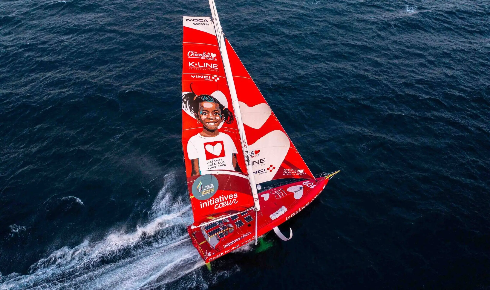

L’association partenaire
Plus de cinq cents enfants
sauvés grâce au projet
L’association Mécénat Chirurgie Cardiaque accueille en France des enfants atteints de malformations cardiaques venus de pays qui n’ont pas les moyens techniques de les soigner. Initiatives-Cœur en est l’ambassadeur sportif depuis sa création.

Le cycle vertueux du projet
Chaque sponsor mobilisé sur le bateau, chaque marque de chocolat vendue, chaque mille parcouru en course contribue directement au financement des opérations cardiaques. Le sport n’est pas qu’une vitrine — c’est le moteur économique du programme humanitaire.
Comment fonctionne l’association
Les enfants accueillis viennent principalement d’Afrique, du Moyen-Orient et d’Asie. Ils sont opérés par des équipes médicales bénévoles dans des hôpitaux partenaires en France, hébergés dans des familles d’accueil pendant la durée du traitement, puis raccompagnés dans leur pays une fois rétablis. L’ensemble du parcours médical et humain est pris en charge par l’association.
Pour soutenir directement Mécénat Chirurgie Cardiaque, rendez-vous sur mecenat-cardiaque.org.